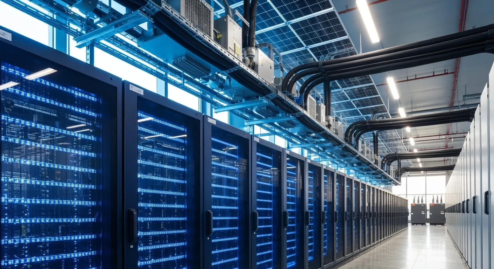
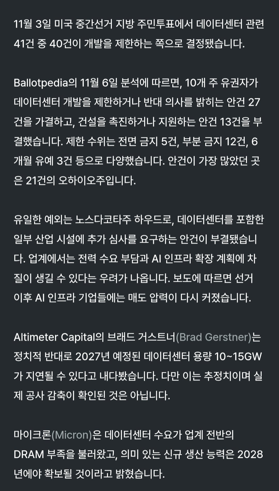

데이터센터가 님비(Not In My Back Yard)의 대상으로 확정된듯
머스크가 지니어스한 방법이랍시고 이동식 가스터빈발전기돌리고 염병한거에 대한 부작용도 큰듯(제일 크게 뉴스타고 대서특필됬으니)
저렇게 되면 진짜 머스크 말한대로 데이터센터를 궤도권 밖으로 날리든가 기업용 도시를 건설하던지 아니면 제3국에 위탁하는수밖에 없을듯
1안도 당장 안되고 2안도 장기발전계획이고, 3안뿐인데 저게될만한 조건이 전력발전량이 안정되고 기간망설치가 잘되어있는 국가라고 하면 적성국인 중국 러시아 준동맹 우크라이나(...놀랍게도 cdn네트워크는 졸라 잘되있음) 동맹이었던 캐나다 그리고 우리나라 정도인데...
우리나라는 아니겄지 국토도 좁아터졌는데 냉각설비 생각하면 동해 아님 남해뿐인데 거기다 지었다간 개판날듯
ㄹㅇ 농담 아니고 진지하게 일롱마는 한국 오는게 속 편하겠는데?